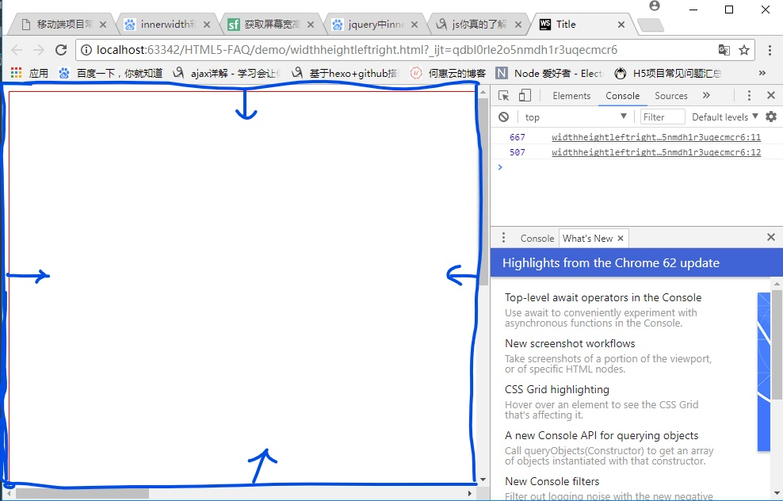
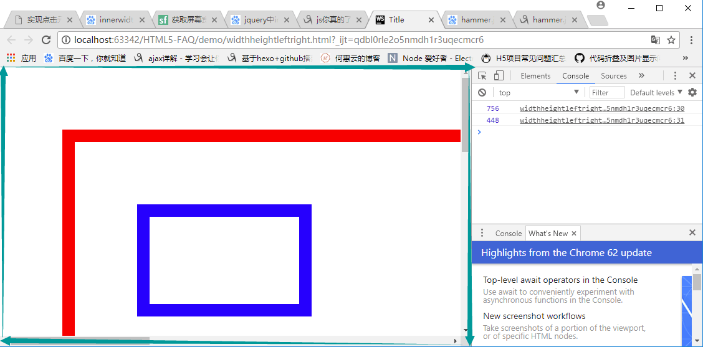
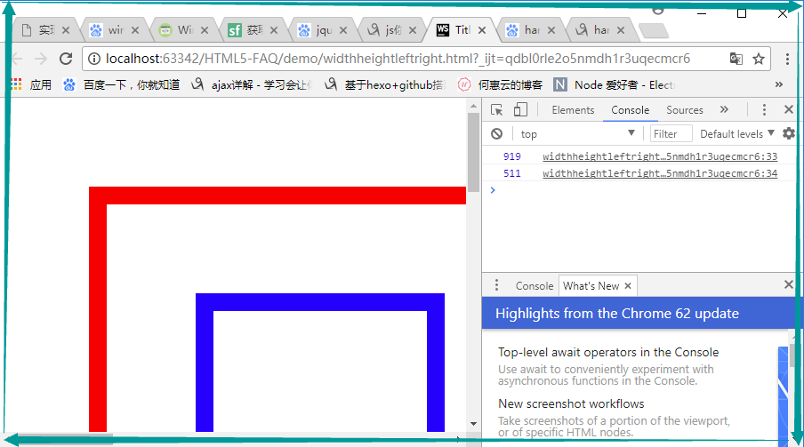
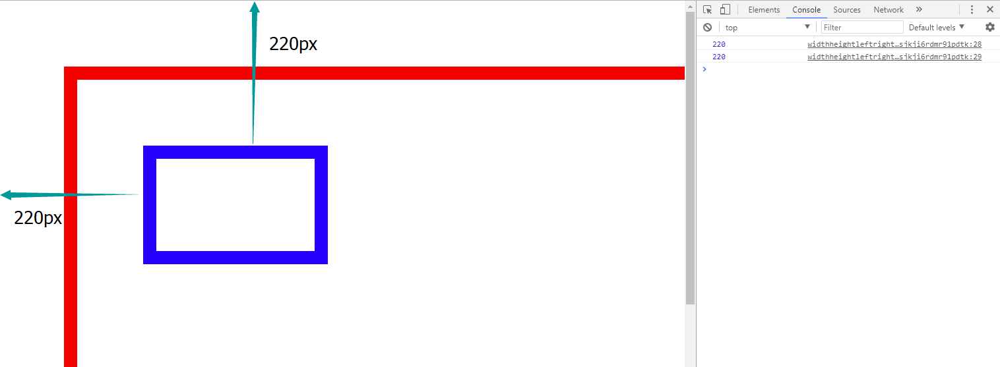

前言
最近在研究一款触屏手势库Hammer.js,发现在实现各种效果的时候，需要获取元素各种宽高的值。我本来就对这些方法有些混乱，而且还要边学Hammer.js边查该用什么方法获取值，这简直不能忍。于是，特意写篇博客来总结一下。
总结window和body的各种取值问题
1. $(window).width()和 $(widow).height()
1 | $(window).width(); //浏览器可视区域的宽（包括padding+border+margin，不包括竖滚动条的宽度） |
具体范围如图蓝色区域所示：

document.documentElement.clientWidth
document.documentElement.clientHeight
这两个和上面获取的范围一样,不过这个是原生JS获取的方法
2.window.innerWidth 和 window.innerHeight
1 | window.innerWidth; //浏览器可视区域的宽（包括padding+border+margin，也包括竖滚动条的宽度） |
具体范围如绿色箭头所示：

3.window.outerWidth 和 window.outerHeight
1 | window.outerWidth; //浏览器窗口的宽（包括padding+border+margin，也包括竖滚动条的宽度） |
具体范围如绿色箭头所示：

4.document.body.clientWidth 和 document.body.clientHeight
1 | document.body.clientWidth; //获取body的宽度（包括padding，不包括border和margin） |
5.window.screenLeft 和 window.screenTop
1 | window.screenLeft; //获取浏览器窗口距离pc屏幕最左边的距离 |
window.screenX的效果和windon.screenLeft一样；
window.screenY的效果和window.screenTop一样。
6.$(document).scrollTop() 和 $(document).scrollLeft()
1 | $(document).scrollTop(); //获取竖向滚动条卷曲进去那部分距离 |
存在一个问题：当垂直方向的滚动条到最低端的时候，它的值也为零。
总结普通元素的各种取值问题
1.$("div").width()和 $("div").height()
1 | $("div").width(); //元素的宽（不包括padding+border+margin） |
如果div的样式为：
1 | div{ |
$(“div”).width() 结果为 200
$(“div”).height() 结果为 100
2.$("div").innerWidth() 和 $("div").innerHeight()
1 | $("div").innerWidth(); //获得包括内边距（padding）的元素宽度 |
如果div的样式为：
1 | div{ |
$(“div”).innerWidth(); 结果为：240
$(“div”).innerHeight(); 结果为：140
3.$("div").outerWidth() 和 $("div").outerHeight()
1 | $("div").outerWidth(); //获得包括内边距和边框（padding + border）的元素宽度 |
如果div的样式为：
1 | div{ |
$(“div”).outerWidth(); 结果为：280
$(“div”).outerHeight(); 结果为：180
4.$("div").outerWidth(true) 和 $("div").outerHeight(true)
1 | $("div").outerWidth(true); //获得包括内外边距和边框（padding + border + margin）的元素宽度 |
如果div的样式为：
1 | div{ |
$(“div”).outerWidth(true); 结果为：320
$(“div”).outerHeight(true); 结果为：220
5.$("div").offset().top 和 $("div").offset().left
这个属性比较复杂，分两种情况：
（1）脱离文档流
当脱离文档流时，$("div").offset().left 的值为相对于父元素的left值+marginLeft 值之和，top值同理。
1 | $("div").offset().top; //$("div").offset().top = top + marginTop |
当div样式为：
1 | <style> |
$(“div”).offset().top; 结果为：50px
$(“div”).offset().left; 结果为：50px
（2）没有脱离文档流
1 | $("div").offset().top; //元素(包含元素外边距margin值)相对于HTML顶部的偏移量 |
结果如图所示：

注意：$(“div”).offset().left 是jQuery的写法；
原生JS的写法为：
ele.offsetLeft;
ele.offsetTop;
6.ele.offsetWidth 和 ele.offsetHeight
1 | $("div")[0].offsetWidth; //offsetWidth = width + padding + border |
如果div的样式为：
1 | div{ |
$(“div”)[0].offsetWidth; 结果为：280
$(“div”)[0].offsetHeight; 结果为：180
7.ele.clientWidth 和 ele.clientHeight
1 | $(".dv")[0].clientWidth; // clientWidth = width + padding-滚动条宽度 |
如果div样式为：
1 | .dv{ |
$(“.dv”)[0].clientWidth; 结果为：223 （223 = 200+20*2-17（滚动条））
$(“.dv”)[0].clientHeight; 结果为：123（123 = 100+20*2-17（滚动条））
8.ele.scrollWidth 和 ele.scrollHeight
以下求的都是元素A的scrollWidth和scrollHeight,如果A元素和B元素之间的关系为：
1 | <div class="A"> |
（1）当B元素的width/height+padding+border+margin不超过A元素width/height+padding的值时,
scrollWidth =A元素的width + A元素的padding;
scrollHeight = A元素的height + A元素的padding;
如果样式为：
1 | .A{ |
$(“.A”)[0].scrollWidth 的值为 240 = 200(A’width) + 20（A’padding）x2；
$(“.A”)[0].scrollHeight 的值为 140 = 100(A’height) + 20（A’padding）x2 ；
（2）当只有B元素的height+padding+border+margin超过A元素height+padding的值时，出现竖直滚动条，
scrollWidth = A元素的width + A元素的padding - 竖直滚动条宽度;
scrollHeight = A元素的padding + B元素的（height + padding + border + margin）;
如果样式为：
1 | .A{ |
$(“.A”)[0].scrollWidth 的值为 223 = 200(A’width) + 20（A’padding）x2 - 17(竖直滚动条宽度))
$(“.A”)[0].scrollHeight 的值为 300 = 20(A‘padding)x2 + 200(B’height) + 10(B’padding)x2 + 10(B’border)x2+10(B’margin)x2
（3）当只有B元素的width+padding+border+margin超过A元素width+padding的值时，出现横向滚动条，
scrollWidth = A元素的padding-left + B元素的（height + padding + border + margin-left）;
scrollHeight = A元素的height + A元素的padding - 横向滚动条高度;
如果样式为：
1 | .A{ |
$(“.A”)[0].scrollWidth 的值为 270= 20(A‘padding-left) + 200(B’width) + 10(B’padding)x2 + 10x2(B’border)+10(B’margin-left)
$(“.A”)[0].scrollHeight 的值为123 = 100(A’height) + 20（A’padding）x2 - 17(横向滚动条宽度))
（4）当B元素的width/height+padding+border+margin都超过A元素width/height+padding的值时
scrollWidth = A元素的padding-left + B元素的（height + padding + border + margin-left）;
scrollHeight = A元素的padding + B元素的（height + padding + border + margin）;
如果样式为：
1 | .A{ |
$(“.A”)[0].scrollWidth 的值为 270= 20(A‘padding-left) + 200(B’width) + 10(B’padding)x2 + 10x2(B’border)+10(B’margin-left)
$(“.A”)[0].scrollHeight 的值为 300 = 20(A‘padding)x2 + 200(B’height) + 10(B’padding)x2 + 10(B’border)x2+10(B’margin)x2
以上情况都是B元素没有脱离文档流的情况，当B元素脱离文档流之后，
情况（1）一样；
情况（2）scrollWidth 一样，scrollHeight =B元素的（height + padding + border + margin+top）；
情况（3）scrollHeight 一样，scrollWidth =B元素的（height + padding + border + margin/2+left）；
情况（4）scrollWidth =B元素的（height + padding + border + margin/2+left）
scrollHeight =B元素的（height + padding + border + margin+top）。
其它
1.如何获取一个元素离他相对定位父元素（position: relative;）之间的高度？
1 | $(ele).position().top; |
2.怎么获取一个有滚动条的元素的实际高度?
1 | $(".rent-has-selection")[0].scrollHeight; |
3.怎样让一个div高度和浏览器高度一样?
1 | <body> |